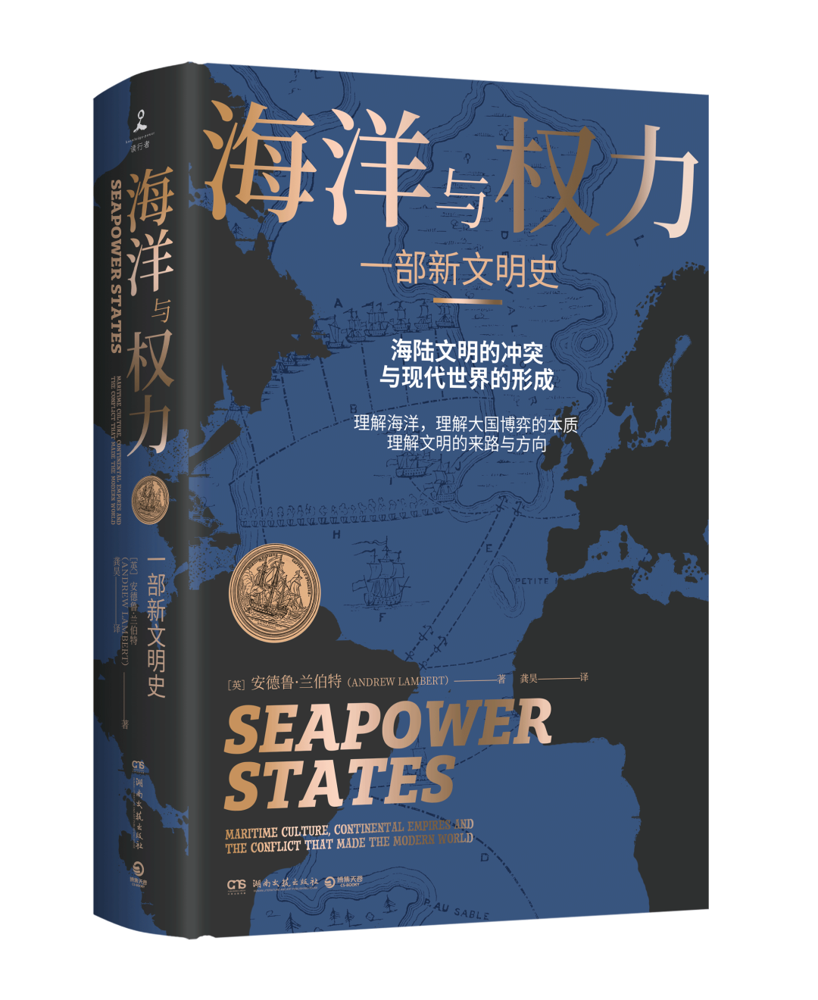
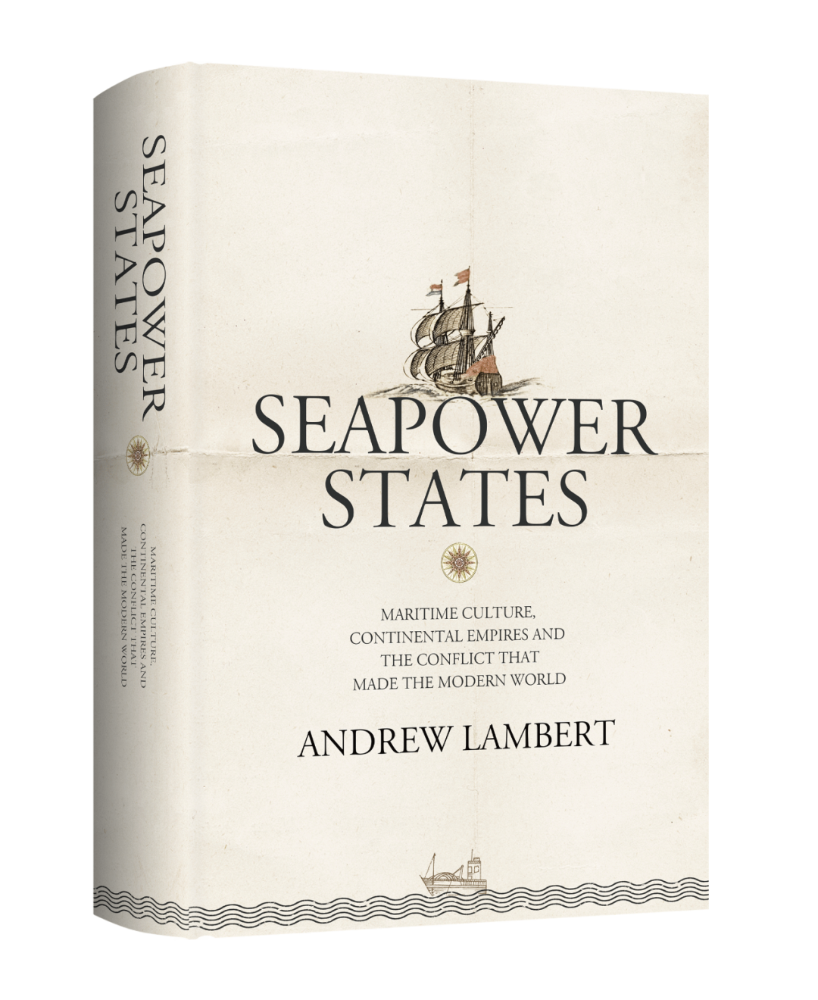
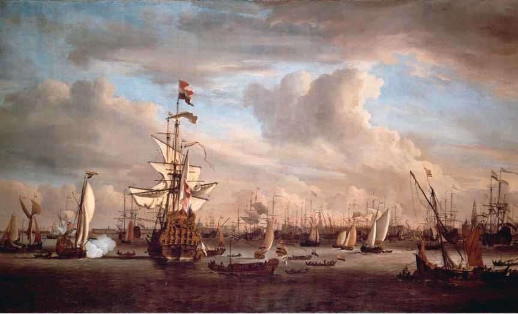
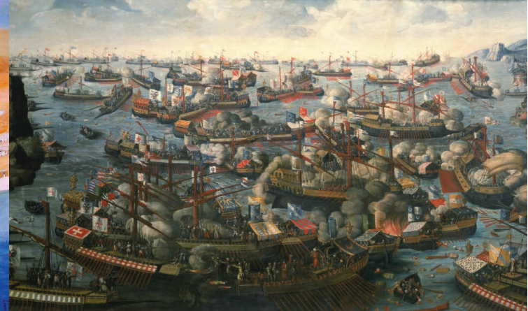
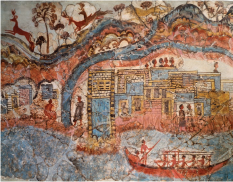
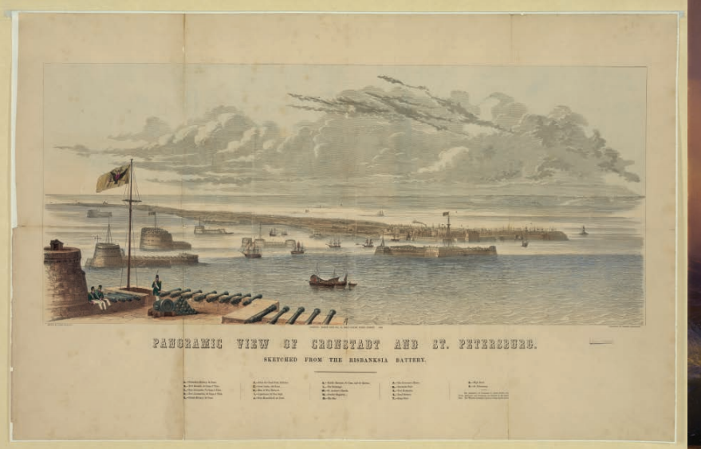
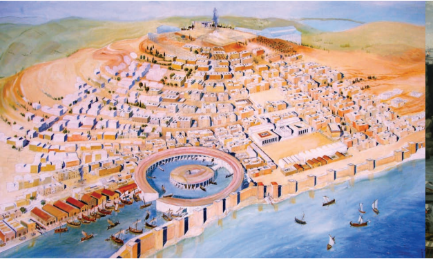
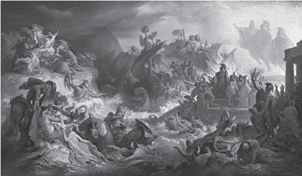
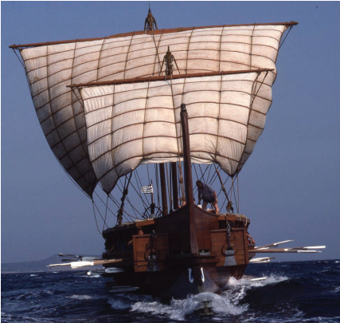

收录于合集

新书简介

书名：海洋与权力：一部新文明史
作者：[英]安德鲁·兰伯特（AndrewLambert）
译者：龚昊
上架建议：历史
装帧：精装
定价：88.00元
出版日期：2021.4
出版社：湖南文艺出版社
开本：16开
ISBN ：978-7-5726-0047-0
作者简介
安 德鲁·兰伯特（AndrewLambert），全球知名历史学家，伦敦国王学院海军史教授，英国皇家历史学会成员，海洋研究学会安德森奖章获得者，在海军史、军事战略史、科技史等几大领域耕耘了将近40年。主要研究方向为世界海军史及海陆地理框架下的文明史，著有《风帆时代的海上战争》（War at Sea in the Age of Sail）等近20本广受赞誉的社科书。

内容简介
本书获2018年吉尔德·勒曼军事历史奖（由纽约历史协会颁发，表彰每年以英文出版的军事历史领域的最佳书籍。）
这是全球海洋史领域顶尖学者、英国历史学家安德鲁·兰伯特的核心著作，是一部有着“大思考”意义的作品，讲述了海权国家曾经的辉煌时代与未来的方向，探索古往今来中等国家如何有意识地打造以海洋为核心的特色，深度剖析海陆文明的根本冲突与现代世界格局的形成过程。
在本书中，作者主要着眼于雅典、迦太基、威尼斯、荷兰、英国等曾经作为“海洋霸主”而存在的国家，探讨与生俱来的海权文化如何使得它们获得了超越自身疆域规模的成功。但当陆权与海权的冲突日益鲜明，全球格局也因之发生剧变之后，“海洋”的地位开始被重新思考和定义，这也是我们今天需要关注和解决的问题。

编辑推荐语
★ 顶尖学者权威著作：本书作者是世界名校伦敦国王学院的海军史劳顿教席教授，代表着这一领域的最高学术水平。本书是作者最核心的一部著作，详述世界制海权的变迁及其背后深刻的历史规律，并预测未来的海洋力量趋势，重磅权威。
★ 符合历史阅读趋势：本书内容严肃而话题直观、视角宏大而细节丰富，符合当下广大历史、军事、时政、文化阅读爱好者的兴趣和阅读趋势，可读性极高。
★ 学术大咖推荐：当下最受学术圈和大众最喜欢的研究“何谓中国”的跨界学者，畅销书作者《枢纽》《破茧》作者施展与中国政法大学教授、政治学系主任、《西方史纲》作者李筠重点推荐。
★封面烫金，精装大气，配有数十页彩插，高度还原从罗马到现代海权的发展脉络。

各方赞誉
本书通过一条引人入胜的地缘政治时间线呈现了“一种观念的历史，以及它跨越时间的传播”……（书中有）许多富有争议性的见解……赫尔曼·麦尔维尔把海洋称作“被水覆盖的那部分世界”，本书对长期存在于这部分世界里的机会和风险做了个绝妙的概述。——威廉·安东尼·海，《华尔街日报》
令人叹服……兼具学术性与可读性。——加里·安德森，《华盛顿时报》
在本书中，兰伯特对伯罗奔尼撒战争、布匿战争、威尼斯人与荷兰的海外帝国，以及英国与欧洲的陆上霸主（包括西班牙—奥地利哈布斯堡王朝、路易十四和拿破仑时期的法国、威廉二世和希特勒时期的德国等）之间一再发生的战争做了发人深省、富有洞见的分析，完美地融入了这个宏大的主题。——《亚洲书评》
兰伯特无疑是当今最具有洞察力的海军历史学家。他涉猎广泛，对他的主题十分敏感。然而，这是一本十分严肃的书……在未来几十年里，它将成为大学中的标准教科书……我认为这本书令人钦佩。——杰拉德·德根，《泰晤士报》
他的书完全符合我们所有的评判标准，即独创性，出色的研究，绝佳的文笔和出色的可读性。其他三本入围图书都是军事历史领域的优秀作品，但兰伯特这本我们认为是最好的。——安德鲁·罗伯特教授，吉尔德·莱尔曼军事历史奖评委会主席
这是一部关于海权与制海权思想极好的、急需的、长视角的历史叙事。它展示了伯罗奔尼撒战争史和布匿战争史这些古典遗产是如何在500年间影响国际政治的修辞学、语法、隐喻和图像学的。这本书文笔优美，结构合理，还引发了一场关于当代国际关系中的海权与制海权的讨论，这场讨论重要且富有争议性。——理查德·哈尔丁，《现代海军史》作者

推荐序
过去人们曾认为欧洲文明在世界现代史中具有特殊的地位，但安德烈·兰伯特认为欧洲和地中海地区的特殊之处在于孕育了海权这种特殊的文化。安德烈·兰伯特所提出的“海权（（seapower）”不同于马汉提出的“制海权（sea power）”这一概念，它包含了自由贸易、包容性的政治制度、对思想文化的宽容态度等一系列价值观。海权国家虽然消亡了，但西方整体接受了他们的价值观，进而形成了现代世界。
——施展（外交学院教授、世界政治研究中心主任）
海权远不只是海洋的军事控制权，甚至也不只是面向海洋的国家战略，而是一种国家的活法，甚至是一种文明的样态。它里面包含着政治、军事、外交、经济、文化各方面融汇贯通的一整套生存逻辑。兰伯特此书是揭示这种生存逻辑的佳作。虽然中国不会成为海权国家，但深入理解并合理融汇海权是中国成为真正的大国的必修课。
——李筠（中国政法大学教授、政治学系主任）

目 录
前言 导言 作为文化的海权 第一章 创造海权身份 第二章 构建海权：雅典、民主制和帝国 第三章 烧掉迦太基舰队 第四章 贸易、战争和仪式：威尼斯的海权国家 第五章 “我们为了巨大的利益开拓海洋”：荷兰的海权国家 第六章 海洋国家与海外帝国：一个角度问题 第七章 大陆国家的海军 第八章 英国：最后的海权 第九章 今天的海权

中文版序
本书的主旨是把“海权”（ seapower）和“制海权”（ sea power）两个词区分开来，我用前者来形容海洋在一个国家的经济、战略、文化和政治生活中所处的至高无上的地位，而后者则是由美国海军理论家阿尔弗雷德· 塞耶· 马汉在1890年创造的，马汉用它来描述出于战略目的对海洋的控制。马汉故意把这个词拆分成一个短语以改变它的含义。他在自己的著作中没有用过“海权”这个词，因为他知道，他的国家不是一个海权国家。美国的身份是由其巨大的规模以及国内经济资源塑造而成的。然而，在1890年，美国唯一的战略威胁来
自海上，因此，美国需要一支强大的海军来威慑潜在的侵略者。在第二次世界大战中，美国有效地利用了制海权，但它没有成为一个海权国家。同样的逻辑也适用于俄罗斯和中国：它们不是海权国家，海权国家都是一些依赖海洋的弱国。但这三个国家都承认，制海权作为其国家安全的一部分，具有战略价值。虽然中国与海洋存在长期而重要的关系，但海洋从来不是中国身份的核心。在任何政治体系当中，最强大的国家总是把精力集中在陆地上，而把海洋留给相对弱小的海权国家。

需要强调的是，本书作者的视角与大多数中国读者截然不同。我父亲曾在英国皇家海军中服役。而我住在英国，它是五个海权大国中的最后一个，我花了很多时间来学习和教授这个国家的历史和战略。因此，我是以海洋和广阔的世界为中心来理解英国历史和悠久文化的。英国与非洲、美洲、亚洲和澳大拉西亚进行全球海上贸易已有500多年的历史，英国历史上的重大事件往往都在海上上演。特拉法尔加广场位于伦敦市中心，而伦敦是英国的首都、商业中心和重要港口。建造这个广场是为了纪念英国最伟大的胜利，以及它的民族英雄、海军上将纳尔逊子爵的牺牲。虽然特拉法尔加角位于西班牙南部海岸，距离英国很远，但这场战役是为了维持对海洋的控制权而打的，这是英国国家安全、权力、贸易和财富的基础。英国是欧洲西北海岸外的一小群岛屿，人口有限，以欧洲大陆的标准来看，它从来都算不上一个强国。它只能依靠海洋，因为它缺乏控制大陆所需的人力。英国自由民主的政治体系随着它与全球的往来不断加强而发展，这反映出了它对贸易的关注，以及海军力量的重要性压倒一切这一社会—经济共识的形成。英国曾经拥有的那个庞大帝国是由港口城市、贸易中心和海军基地来主宰的。相比之下，中国历史上具有决定性意义的事件都发生在陆地上。土地和人口一直是它的首要问题：中国面临的主要威胁来自陆地，长城的建造就证明了这一点。认识到作者和读者视角的差异是至关重要的。虽然这本书是为了与你们有所不同的读者而用英式英语写成的，但我希望它也能向来自不同文化传统的读者解释我的世界观的基础。即使是在其帝国主义的鼎盛时期，英国也像雅典、迦太基、威尼斯和荷兰共和国一样，是一个弱小的国家，依靠的是海上贸易和海军防御，而不是土地和士兵。这些国家创造了独特的“海权文化”，包括代议制的政治制度，这种制度为维持昂贵的海军力量提供了必要的长期资金，而正是海军力量确保了这些国家的独立和繁荣。它们反对波斯、罗马、西班牙、法国和德国等强大的大陆帝国想要建立普世君主国（ Universal Monarchy）的野心，因为这些帝国会破坏它们的贸易和文化。雅典和迦太基被陆上帝国摧毁了，这些帝国害怕它们开明的价值观和经济上的成就。而荷兰共和国和英国则借鉴了威尼斯的历史，在从一个大国降至中等强国的过程中，回避了遭受暴力摧毁的命运，同时保留了自己独特的文化和身份。

本书提出的问题之一是，如何才能建立一种世界秩序，既尊重中国、俄罗斯和美国等“强”国的观点，也尊重那些为了维护自身安全、价值观以及独特文化和身份而联合起来的相对较“弱”的海权国家的观点，弥合两者之间的分歧。强大的国家总是懒得去考虑全球体系中不同小国的利益，这种疏忽会导致误解和敌意。相比之下，依赖全球体系的海权国家对更广泛的世界的参与度要深得多。英国历史学家更倾向于研究其他国家而不是自己的国家，这并非偶然，因为长期以来，知识一直是大规模军队所拥有的原始力量最有用的替代品。本书所描述的五个海权国家都对外部世界充满好奇。在欧洲，“历史”这个概念是在雅典发展起来的，雅典作为大国的时代所留下来的关键文本仍然是西方教育的核心：它们塑造了统治英国的人和统治海外帝国的人的思想。希罗多德（ Herodotos）和修昔底德（ Thucydidēs）向他们的同胞解释了两场大战的起源和意义，这些教训此后一直是西方思想的核心。威尼斯在公元1500年左右找回了这些文本并将其印刷出来，这些文本在荷兰共和国和英国被当作重要的政治智慧宝库来研究。现代国际法是在荷兰思想家的帮助下形成的，这些法律强调了他们对公海和自由进入市场的兴趣。英国经济学家倡议将自由贸易作为全球化的基础，而帝国式的陆上强国则一直利用其权力控制和封闭市场。
强国与弱国之间的最终有效关系始终取决于诚实、正直和法治等共同价值观。强大的国家应该维护这些价值观，因为弱国别无选择，历史表明，它们会反抗。荷兰共和国是因为拒绝西班牙统治者试图压制当地的政治权利和经济机会而诞生的。虽然所有西方帝国中最伟大的罗马帝国为了建立一个普世帝国，摧毁了众多弱小国家，并违背了神圣的条约，但它不能摧毁这些政权所代表的价值观。
尽管自文明诞生以来，国家之间的竞争一直是历史的一个基本要素，但大多数竞争都发生在类似的国家之间，它们所争夺的是同样的战利品。而我关注的是以不同文化、价值观和经济模式为关键因素的国家竞争。主要的大陆帝国和相对较小的海权国家之间的竞争往往趋于极端。当它们开战时，风险是很高的。罗马人非常害怕迦太基那种不同的政治模式和经济成就，以至于他们把迦太基从地球上抹去，摧毁这座城市，把它的人民贬为奴隶，烧毁他们的书籍和记录。为了防止迦太基的思想复活，罗马通过宣传，妖魔化了整个迦太基文明，及其最伟大的政治家汉尼拔· 巴卡（ Hannibal Barca），他曾竭力阻止罗马建立普世君主国。当英国与拿破仑的法兰西帝国作战时，通往和平之路只能建立在其中一方的完全毁灭之上。拿破仑公开宣称，他会像罗马人对迦太基所做的那样对待英国，这意味着他的帝国野心是无限的。拿破仑的帝国被泛欧联盟击败，仅存在了11年就消失在历史的长河中。而不列颠则延续了400多年，最后在没有遭受多少暴力的情况下瓦解了。
若干世纪以来，帝国衰落的过程吸引了众多历史学家。当一个大国的历史学家开始对与其相似的国家的衰落史进行研究时，我们可以肯定，它的领导人正在为自己的衰落感到焦虑。英国的历史学家在17世纪70年代研究了罗马的衰落， 50年后又研究了雅典和威尼斯的衰落。美国人研究英国衰落已经有70年之久了。管理衰落是一个复杂的过程，需要灵活、让步和牺牲。有必要强调的是，衰落有两种形式，相对的和绝对的。在1914年之前，英国处于相对衰落的状态，随着德国、美国和俄国跟随英国进入工业化进程，它在全球经济活动中所占的份额和主要工业产出百分比都在下降，但是英国的经济和实力仍然有着绝对的优势，这意味着它可以在关键的经济和战略领域——航运、造船、保险和资本——以及与海军实力和军备制造相关的领域保持主导地位。英国仍然控制着全球经济体系和为商业提供动力的关键通信系统，它以只保持一支小型陆军的方式来平衡维持全世界最大海军的成本。只要各大国之间保持和平，这种相对衰落是可控的。1900年至1914年间，英国经常通过有针对性地展示海军力量来进行公开威慑，对一系列国际危机加以干预，以化解外交争端和防止战争。在这一时期，英国是唯一的全球大国，其他大国如法国、德国、奥匈帝国、俄国和美国都被限制在特定地区，缺乏全球流动性。英国的全球地位因澳大利亚、加拿大、新西兰和南非等日趋独立的移民国家的支持而大大提高，而印度则为英国提供了主要的人力和物资资源基础。正式的帝国正在向地方自治过渡，逐渐变成了一个拥有共同主权的国家联合体，通过对海军力量和全球贸易的相互依赖而联系在一起。这个过程实现了负担的分担，并反映了共同的价值观。在两次世界大战中，帝国为英国的战争努力做出了巨大贡献，而且是自愿的。现代的英联邦在很大程度上保留了这种文化联系，而英国与一些英联邦国家的关系尤其密切。许多英国人在英联邦有亲戚。我的亲戚在澳大利亚。

英国的绝对衰落始于第一次世界大战，当时的政府错误地试图表现得像一个陆上大国，动员了大量的军队，并在西欧打了一场总体战。这一努力所付出的人力和经济代价使英国欠了美国的债，而在1913年时，美国还欠着英国很大一笔债。背负着巨额债务的英国重塑了帝国，把更多的地方控制权交给了澳大利亚、加拿大、新西兰和南非，并提高了经济回报率。控制衰退的关键是现实主义：要有意愿削减政策目标以匹配有限的资源。当欧洲出现新的战略威胁，迫使英国40年间第二次把重点放在防御上时，这一进程仍未完成。阻止战争的努力失败了。第二次世界大战的经济和政治影响结束了英国的大国地位，这个破了产、精疲力竭的国家无法再维持正式的帝国，也拿不出必要的国防开支。作为替代，它把焦点转移到了国内局势上。随着大国地位的衰落，旧的社会结构被削弱，昔日的精英被迫把权力分享出来。之所以没有发生革命，是因为明智的精英们及时做出了让步。随着选举权的扩大，新选民更关心的是国内福利和经济问题，而不是国家权力和地位。1945年，英国选民用一个承诺实行免费医疗保健、福利国家和主要产业国有化的社会主义政党取代了温斯顿· 丘吉尔（ Winston Churchill）这位成功而富有魅力的战时领导人。与此同时，对财富的征税增加了，精英的特权减少了，自那时起，精英的地位不断受到侵蚀。英国的精英们深知，除了受控的衰落外，唯一的选择就是在帝国和英国本土四处爆发的暴力抗争。作为一个海权帝国，英国能够在不危及国家安全的情况下结束帝国。1797年，拿破仑摧毁了威尼斯城邦，而对英国和荷兰来说，对衰落过程进行管理的结果是，它们作为以海事为焦点的中等强国保存了它们独特的海洋文化和身份。英荷合作反映出了海权在欧洲背景下作为局外人的长期共同历史。而英国退欧的决定反映了一种潜在的差异感，在这种差异感中，海洋和长期抵抗大陆暴政的历史非常突出，表明这个海权国家熬过了衰落的过程。小小的岛国看待世界的方式与大陆大国是截然不同的，这种不同正是本书的中心内容。
扫描二维码或
点击左下角 阅读原文
可以优惠价直接购买
好好学习，天天“在看”